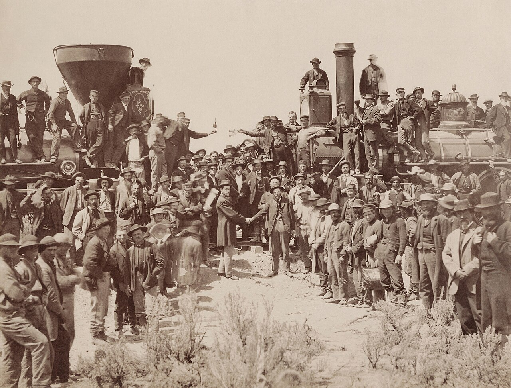

Economics
Physical economy
Wealth is not money — it is the rising productive power of people and nations. Forecasts grounded in the real, physical economy, the World Land-Bridge program, and the case for a New Bretton Woods.
Enter the economics library